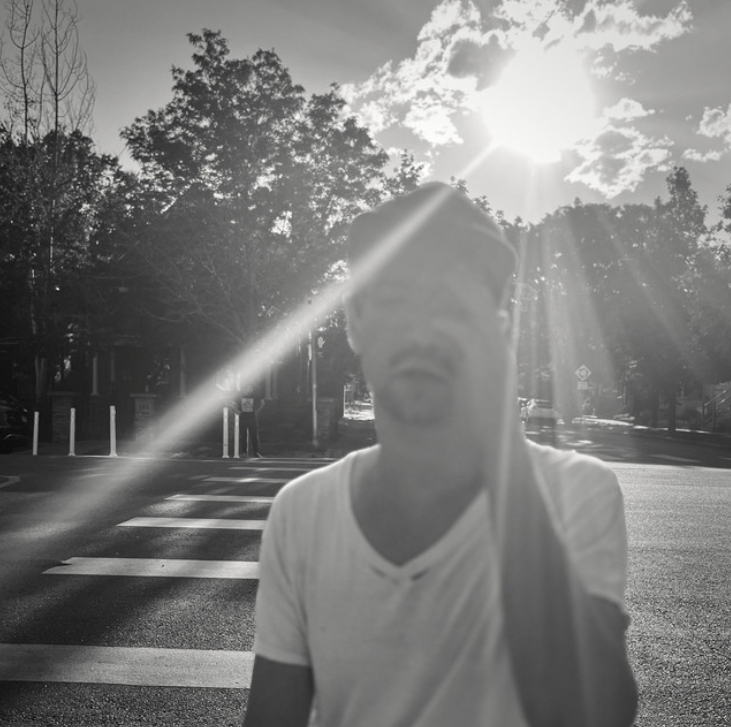

Hier kommen noch ein paar Nachzügler aus dem Jahresanfang, denen wir unbedingt noch ein Bühne geben möchten! Ansonsten erfreuen wir uns an der neuen Single "Tightrope" von Press Club aus dieser Woche. Wir beenden den Drahtseilakt mal an dieser Stelle und melden uns in Kürze mit den nächsten Neuheiten im Schlepptau zurück.
Jetzt neu in der Fresh-Fit-Playlist:
Anteile, Die - Wie Geht Der Tanz Darkside - S.N.C. Distrust - Nid einfach IC3PEAK - Господи, прости меня Lambrini Girls - Cuntology 101 Meatware - Howler Pigeon Dog - Wet Washing Press Club - Tightrope
KW 03/25 Playlist-Update: Fresh Fit
So langsam rollt das neue Jahr musikalisch richtig an und hält gleich eine handvoll toller Tracks für uns bereit. Sei es die neuste (und voraussichtlich letzte Vorab-)Single der Wombats zu der wir nicht nein sagen können oder dem just erschienen Album If Heaven Looks A Little Like This der Delights, das mit dem ein oder anderen wohlklingenden Liedchen daherkommt. Aber auch Inhaler, Jelly Crystal, Mating Ritual und Saya Gray stehen mit neuer Musik in den Startlöchern und geben uns einen kleinen Vorgeschmack auf das, was uns dieses Jahr noch so erwartet.
Jetzt neu in der Fresh-Fit-Playlist:
Delights - Take A Picture Inhaler - A Question Of You Jelly Crystal - Apollo OK GO - A Stone Only Rolls Downhill Mating Ritual - Shangri-blah Saya Gray - LIE DOWN Wombats, The - Can't Say No
KW 01/25 Playlist-Update: Fresh Fit
Happy New Year an alle! Wir haben eine kleine Pause gemacht und sind nun mit einer frischen Ladung Neuheiten im Gepäck zurück. Diese Woche gibt es gleich zwei Pakete zu berücksichtigen: Banger, die uns im Jahresausklang durchgerutscht sind und die frühen Vögel aus 2025.
Beach Weather - Seth Cohen Benjamin Booker - SAME KIND OF LONELY beware the bears - breathe CECI - 18 Darwin Deez - Placeholder Fuffifufzich - Ich liebe dich evtl. für immer Hugo Daniel - She Doesn't Like Me Anymore Max Montanaro - Overgrown Michael Llewellyn - Home Sometime Noshows - Decisions Rikas - Where Do You Go SALÒ - Videodrome TORRES & Julien Baker - Sugar In The Tank
17.12.2024, Marco Puttkammer
Hörempfehlung: Darwin Deez (Diskografie)
Eine ungewöhnliche Empfehlung für einen ungewöhnlichen Künstler

Coverartwork Of Course I Still Love You
Musik ist Kunst, doch das vergisst man allzu oft. Zumeist dann, wenn man eine Reihe belangloser und formelhaft geschriebener "Bloß-nicht-anecken-Pop-Songs" hören musste. Man erinnert sich aber auch wieder daran, wenn man die musikalischen Ergüsse von Künstler*innen wie Darwin Deez hört. Anlässlich seines neuen Albums Of Course I Still Love You ist es doch höchste Zeit, mal genauer hinzuhören. Nicht nur in das inzwischen fünfte Album, sondern in die gesamte Diskografie.
Was also macht diese so besonders oder anders, dass ich hier das bedeutungsschwangere Wort "Kunst" verwende? Zunächst halten wir fest: Darwin Deez trifft die ungewöhnlichen Entscheidungen. Seine Songs verlangen viel Aufmerksamkeit und Toleranz gegenüber wilden Melodien und schon fast anstrengenden Sounds. Vielleicht braucht es sogar 2-3 Hördurchgänge bis es klickt, aber wenn es das tut, dann richtig. Das Hauptinstrument ist der Synthesizer, aber in einer selten zu hörenden Art. Er springt, klimpert und hat so viel zu erzählen, doch leider darf er das gar nicht, denn die Inhaltsebene wird restlos durch die Lyrics bespielt. Sätze wie "I'm debating with the buzzer whether to buzz or not" (The Numbers) oder "I'm orbiting your waist throughout the day, so maybe love is orbital decay" (The World's Best Kisser) erzeugen klare Bilder und sind doch so angenehm selten gehört. Die Musik von Darwin Deez kitzelt das Gehirn in der genau richtigen Weise, wenn man sie denn lässt.
Naturgemäß lassen sie das aber die wenigsten und so kommt es, dass sich Darwin Deez mit einer zwar treuen aber kleinen Fanbase begnügen muss. Für die Fans mag das vielleicht sogar eine gute Sache sein, doch erscheint es wie so oft einfach ungerecht. Immerhin erzielte Deez mit seinem Erstling "Darwin Deez" von 2010 einigermaßen beachtliche Erfolge und Songs wie "Constellations" oder "Radar Detector" verlassen den Gehörgang nach dem Hören nur mit Gewalt.
Darwin Deez ist nischig und seine Musik wird bei einigen kaum gehört abprallen, doch es lohnt sich wirklich einen zweiten Blick zu riskieren. Die Hörempfehlung soll also Diskografie-umfassend sein, jedoch stelle ich hier mal das neue Werk in den Vordergrund, da es mit einem Releasedatum wie Dienstag dem 17.12.2024 naturgemäß weniger Aufmerksamkeit erhält. Selbst hier trifft Darwin Deez die ungewöhnlichen Entscheidungen.
Tracklist: Of Course I Still Love You
OK Boomerang
The Numbers
Caroline
Mush Machine
Wondermaker
Placeholder
Goldmine
Sophie Softly
Always There
You Never Know
Erschienen am 17.12.2024 via juxxtaposition records
20.11.2024, Marco Puttkammer
Hörempfehlung: Franc Moody - Dream In Colour
Wie klingt modernfunkneodiscosoulpophouse? Großartig!
Mit den Genrebezeichnungen ist das ja immer so eine Sache. Gibt es überhaupt noch neue Musik, die sich eindeutig einzelnen Genres zuschreiben lässt oder befinden wir uns nicht inzwischen musikalisch in der absoluten Genrefluidität? Um die Musik der Briten Ned Franc und Jon Moody exakt einordnen zu können bedarf es der Monsterkombination aus dem Titel und selbst das fühlt sich noch nicht richtig an.
Aber verlieren wir uns nicht weiter in solch Unwichtigkeiten und befassen wir uns lieber mit der Musik. Denn da gibt es einiges zu erzählen. Von dem unverschämten Groove, über die Bassriffs und -Licks der Marke „sexy“ bis hin zu der mit „Flanger“-Effekt bearbeiteten Oboe, die den Franc Moody-Sound so unverkennbar macht. Nicht nur auf ihrem Debutalbum, sondern generell. Egal ob Club, Live oder in den eigenen vier Wänden, egal ob man einfach nur tanzen möchte oder man sich in den dicht gelayerten Instrumentals verlieren möchte - Dream In Colour bietet alles. Klar, man sollte eine Vorliebe für elektronische Musik haben und bei dem weiten Genre Disco nicht sofort mit den Augen rollen, aber selbst für Andershörende bietet dieses Album beste Unterhaltung.
Wenn ihr mit Dream In Colour durch seid und dadurch nicht sowieso schon tief in den Groove gesogen wurdet, dann weiten wir diese Hörempfehlung gerne auf die vorangegangene EP Dance Moves und das Folgealbum Into The Ether aus. Und um das Ganze abzurunden, folgt noch die frohe Botschaft: das dritte Album Chewing The Fat erscheint bereits am 07.03.2025.